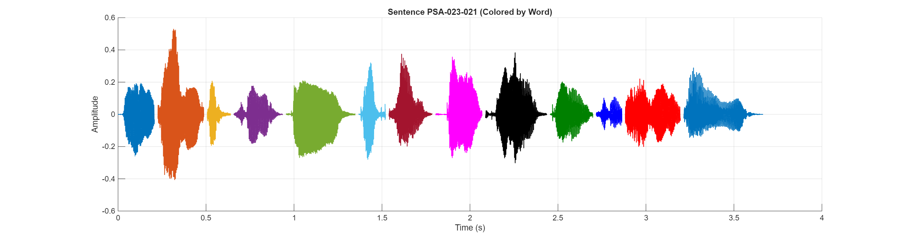

Sentence Audio:
Waveform:
| # | ID | Hanji | POJ |
|---|---|---|---|
| 1 | PSA-023-021-0002 | 恩 | Un |
| 2 | PSA-023-021-0003 | 典 | tián |
| 3 | PSA-023-021-0004 | 及 | kap |
| 4 | PSA-023-021-0005 | 慈 | chû |
| 5 | PSA-023-021-0006 | 悲 | pi |
| 6 | PSA-023-021-0007 | 的 | tek |
| 7 | PSA-023-021-0008 | 確 | khak |
| 8 | PSA-023-021-0009 | 隨 | tè |
| 9 | PSA-023-021-0010 | 我 | góa |
| 10 | PSA-023-021-0011 | 到 | kàu |
| 11 | PSA-023-021-0012 | 一 | chı̍t |
| 12 | PSA-023-021-0013 | 世 | sì |
| 13 | PSA-023-021-0014 | 人 | lâng |